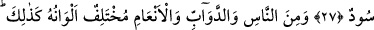
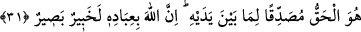

ALLAH,
HER HALİMİZDEN
HABERDARDIR
27. Görmedin mi Allah gökten su indirdi. Onunla renkleri çeşit çeşit meyveler
çıkardık. Dağlardan (geçen) beyaz, kırmızı, değişik renklerde ve simsiyah yollar
(yaptık).
28. İnsanlardan, hayvanlardan ve davarlardan da yine böyle türlü renkte olanlar
var. Kulları içinden ancak âlimler, Allah’tan (gereğince) korkar. Şüphesiz Allah,
daima üstündür, çok bağışlayandır.
29. Allah’ın kitabını okuyanlar, namazı kılanlar ve kendilerine verdiğimiz rızıktan
(Allah için) gizli ve açık sarfedenler, asla zarara uğramayacak bir kazanç
umabilirler.
30. Çünkü Allah, onların mükâfatlarını tam öder ve lütfundan onlara fazlasını da
verir. Şüphesiz O, çok bağışlayan, şükrün karşılığını bol bol verendir.
31. Sana vahyettiğimiz kitap, kendinden öncekini (semavi kitapları) doğrulayıcı
olarak gelen gerçektir. Allah, kullarının (her halinden) haberdardır, görendir.
27) Ey Muhammed! veya hitâba layık ey muhatab! “Görmedin mi” bilmedin mi “Allah”
kudret ve hikmetiyle “gökten” yâni buluttan “su” ve yağmur “indirdi. Onunla renk” ve
cins“leri çeşit çeşit” nar, elma, incir, üzüm ve daha başka sebze ve “meyveler
çıkardık.”
Burada gâib sîğâsından mütekellim sîgasına geçiş, bu ihrâc işine çok önem verildiğini